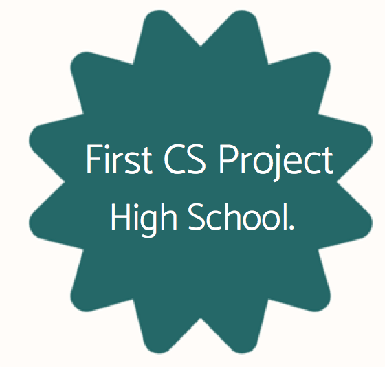
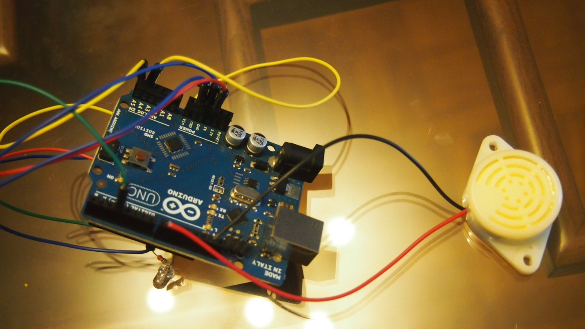
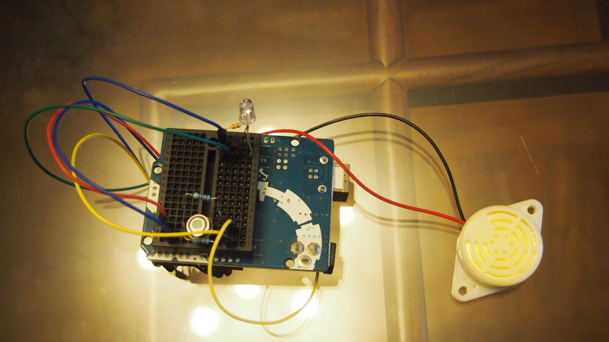

JANVI KALRA
Computer Science & Philosophy
GOAL: Prototyping a wearable that regulates the air conditioner’s temperature in accordance to the user’s comfort
SYNPOSIS: Individual project | Summer 2016 | Arduino/C
SKILLS: Replicating AC control mechanism | Arduino circuitry

FINAL PRODUCT:


KEY PROCESS SLIDESHOW:

2. Using that and a virtual oscilloscope, determined the IR pulse pattern for my AC at every temperature

3. Wired a IR transmitter to the Arduino. Used it to control the AC without its remote
Click this for video of IR transmitter successfully turning AC on
Click this for video of IR transmitter successfully turning AC on

5. Testing the sensor on ice cream
MENTOR: Mr. Sean Sabastian, Mechatronics Engineer, provided instrumental guidance
| CURRENT LIMITATIONS | POSSIBLE SOLUTIONS |
|---|---|
| A finger's temperature does not accurately measure vasoconstriction/vasodilation. Thus, body temperature does not measure one's comfort | Use the LED light‑sensitive photodiodes system to measure vasoconstriction/vasodilation instead. Apple uses this system in their watch's heart rate monitor to detect the amount of blood flowing through the wrist at any given moment. |
| Each AC has a different IR pulse pattern. Consequently, this prototype only works with a Toshiba AC | Imitate the universal remote mechanism so that the wearable can control any type of AC. |